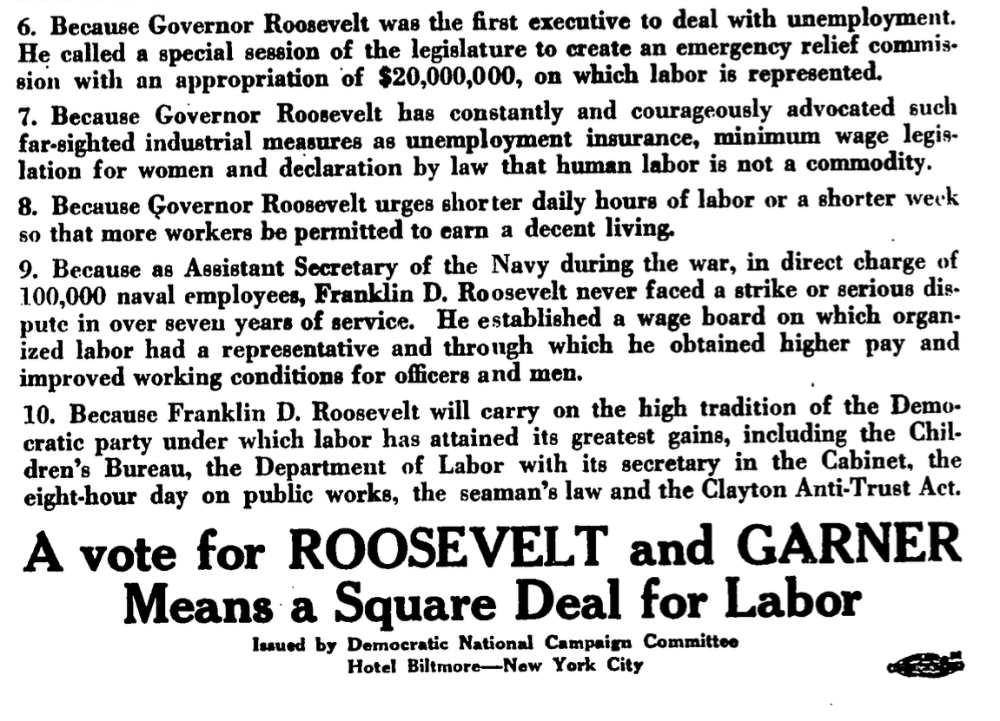

Ben Mathis-Lilley of Slate asked me if I would talk to him a bit about whether women voters brought progressivism to the United States (or, as some would say, ruined the country), so I said, “sure.”
Women voted much as men did, but in smaller numbers, up until 1980 or so—when men suddenly skewed far more conservative. So really, the thing that needs explaining is why men voters should have proved so volatile, so emotional, so unpredictable when Ronald Reagan appeared on the scene.
That doesn’t mean people don’t believe women have, and had, a special interest in voting certain ways, but that belief has varied over time. You might instinctively think that women would be more pro-welfare. The Republican congress and president who supported the Sheppard-Towner Act of 1921 probably did think that. Harriet Frothingham’s case told them otherwise and the existence of vocal, politically active, conservative women probably helped ensure the Sheppard-Towner Act’s demise.

In the 1932 election, the Democrats had a women’s division headed by Molly Dewson, whose team put out flyers that told voters about the New Deal—but she kept the women’s division name off them, to avoid prejudicing men who read them. Dewson believed there was no such thing as women’s issues per se, and warned Franklin Roosevelt, “Franklin, if you ever mortify me by making a speech specifically addressed to women I shall never forgive you.”1
It was common to believe that women would vote for Herbert Hoover, though: he was supposed to have a rapport with them owing to his time as Food Administrator, as Mathis-Lilley notes. Henry Wallace wrote in mid-October, “The thing I am really afraid of in this election is the woman vote. I am afraid that it is too late to do anything about the women.”2 Hoover aides thought similarly; one especially optimistic one wrote at the start of November, “It is still possible to carry California, the wonderful favorable reaction to Hoover’s speech and the unfavorable reaction to the Roosevelt speech, plus Shuler, plus the women, all will save the day here” (they didn’t).3
Molly Dewson was probably right in 1932 that women would consider the issues much as men did, though we don’t have sophisticated polling data to tell us so.
Footnotes
Mary W. Dewson, “An Aid to the End,” 1952, 59, Schlesinger Library, Harvard University.↩︎
Henry Wallace to H.C. Taylor, October 13, 1932, reel 16, Henry Wallace papers, University of Iowa, microfilm.↩︎
George B. Bush and Ray Lyman Wilbur, November 1, 1932, f “Political 1932 corr A--H” b 96, Ray Lyman Wilbur papers, Hoover Institution.↩︎